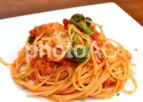

おいしすぎるトマトとモッツァレラのパスタ

- 1.たっぷりのお湯に塩を入れて沸騰させる
- 2.パスタを茹でる
- 3.にんにくはみじん切り、バジルは大きければ半分くらいに切る。モッツァレラチーズは大きめの一口大に切る
- 4.茹で時間に2分前にザルに上げる
- 5.フライパンにニンニクとオリーブオイルを入れ、弱火で温める
- 6.香りが出てきたらトマト缶を加え、中火でぐつぐつ煮る
- 7.パスタを加え、手早く混ぜながらソースを絡める
- 8.モッツァレラチーズを加え、塩で味を調える